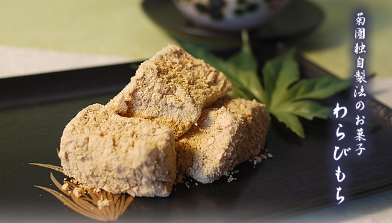
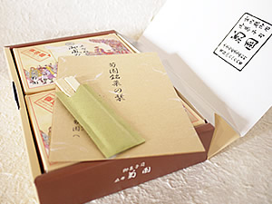
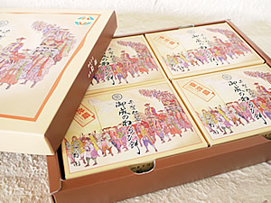
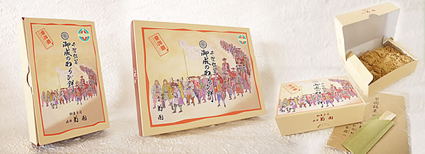

SIGNATURE SWEET
A soft, delicate Japanese sweet with the gentle aroma of kinako.

ABOUT
KIKUZONO's warabimochi is carefully crafted with bracken starch, sugar, and kinako soybean powder. Its soft texture and fragrant roasted soybean flavor create a calm, traditional taste experience.
It contains no preservatives and is best enjoyed fresh and chilled.
PRODUCT INFORMATION
Bracken starch, sugar, kinako soybean powder
Keep refrigerated
2 days
2 boxes ¥700 / 4 boxes ¥1,400
CHOOSE YOUR SIZE
Choose the size that fits your visit. Both are available only at our Chiba shop.

¥700
Perfect for a small souvenir or a personal taste of KIKUZONO.

¥1,400
Ideal for sharing with family, friends, or as a thoughtful gift.

Each box is designed as a refined souvenir, making it easy to enjoy traditional Japanese sweets after your visit.
HOW TO ENJOY
No special preparation is needed. Take it home, open the box, and enjoy the soft texture fresh and chilled.
Back to MenuSTORE LIMITED
Please visit KIKUZONO in Chiba to purchase warabimochi. It is a special souvenir experience from Japan.
Open in Google Maps